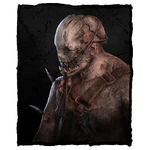
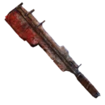

| 名稱 | 埃文·邁克米倫 |
| 綽號 | 夾哥、夾子 |
| 國別 | 美國 |
| 地圖 | 邁克米倫莊園 |
| 能力 | 捕獸夾 |
| 武器 | 砍肉刀 |
| 移動速度 | 4.6m/s |
| 心跳範圍 | 32m |
概述
本名埃文·邁克米倫，是黎明殺機最初的5位殺手之一
一個控場型殺手，能夠使用致命的捕獸夾對全圖施加壓力並等待逃生者踩中陷阱
他的專屬技能包括 恐慌降臨、所向無敵與欣喜若狂，能使其在追殺逃生者的過程中更加高效
難度等級：簡單
背景故事
埃文·邁克米倫把自己的父親當作偶像。並不只是因為父親能給他留下一筆巨大的財富，
同時也因為崇拜父親經營企業的手段高明。在嚴厲的管教下長大，埃文學會了父親的鐵腕經營手段。
邁克米倫莊園的產能居高不下，在父子的聯手打理下企業也是蒸蒸日上。
父親阿爾奇·邁克米倫的心理狀況隨著年齡增長逐漸失去正常的理智，埃文保護著家產不受外人侵占。
無論父親提出什麼樣的要求，他都照做。
完全失去理智後的阿爾奇·邁克米倫讓埃文成了史上最重大屠殺案的實施者。
有消息傳出埃文把100多人騙進了黑暗的礦洞，引爆了炸藥，將他們的靈魂永遠塵封在了地下。
邁克米倫莊園的故事講述的是一對父子因為權力和金錢而誤入歧途的故事。具體有多少受害者死在他們手下是未知的。
沒有紀錄記載埃文·邁克米倫是怎樣演變成這樣的。而他的父親被發現橫死在自家倉庫的地下室裡，但這就是另一個謎題了。
.png) |
恐慌降臨 | 處於你的恐懼範圍內的逃生者 在修理、治療或破壞時觸發技能檢驗的機率提高10%。 觸發的技能檢驗的成功區域縮小40/50/60 %。 |
.png) |
所向無敵 | 破壞板子和發電機的速度增加10/15/20 %。 |
.png) |
欣喜若狂 | 當你抱著逃生者時 移動速度會增加6/12/18 %。 你的恐懼範圍會增加12米。 |
武器
砍肉刀是陷阱殺手的主要武器。這把殘暴的砍肉刀由陷阱殺手使用礦物金屬親手打制而成
當他擊中逃生者後，他將在胳膊上擦拭血跡